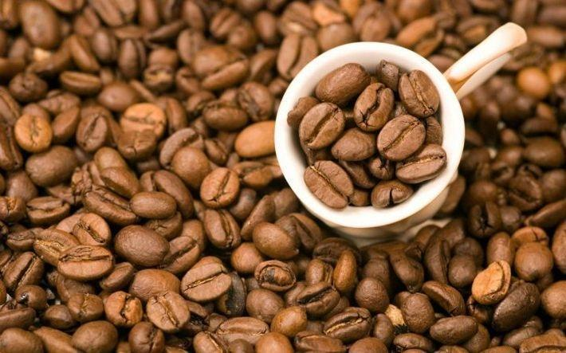

. Содержимость кофеина в «Эспрессо» значительно меньше, чем в кофе, сваренном «капельным» способом. Готовится «Эспрессо» быстро: через молотые зерна проходит вода, которая поддается сильному давлению. Так как этот механизм уменьшает соприкосновение зерен с водой, чашка «Эспрессо» будет содержать меньше кофеина.
5. Сбор зерен до сих пор происходит вручную. Каждый день опытный сборщик собирает до семи корзин бобов. Вес одной корзины — 100 кг. Оплата за собранную корзину — 2-10$. После того, как зерна пройдут обработку, их стоимость уже повысится к $110.
6. Финляндия — страна, где больше всего пьют кофе
7. Международный Олимпийский Комитет запрещает употреблять кофе.